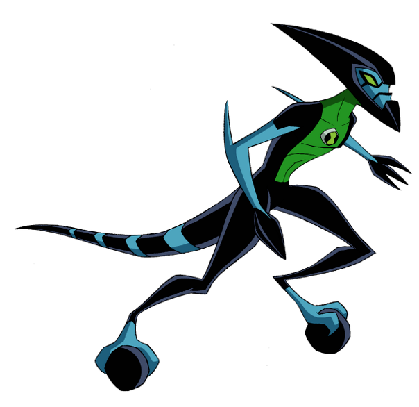
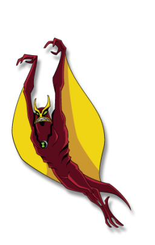

Monstros

Quatro Braços
A força de Quatro Braços não tem limites e consegue carregar qualquer coisa, não importando o peso.

XLR8
O Xlr8 é o alienígena mais rápido que Ben possui.

Quatro Braços
Um alienígena muito poderoso, que é realmente útil quando usado em combates aéreos.